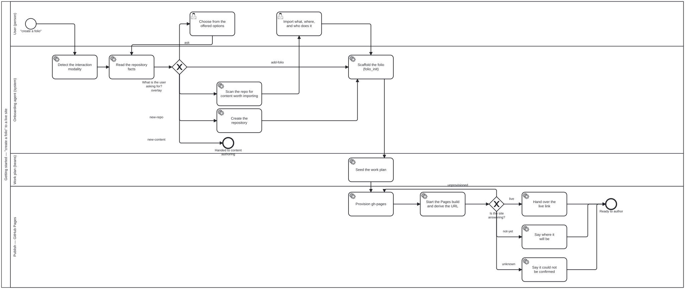

入门指南
本页讲的是第一次对话——从有人说出“我想创建一个 folio”，到拥有一个可以打开的已发布站点，这中间发生了什么。如果你已经有一个 folio，只想把工具链配置好，请直接跳到§4 安装与验证。
- 1. “创建 folio”是五种不同的请求
- 2. 智能体如何决定——以及为什么这是一张表而不是一次判断
- 3. 对话是什么样的
- 4. 安装与验证
- 5. 连接你的 LLM harness
- 6. 转换你已有的仓库
- 7. 看到它被发布
- 8. 让落地页成为你自己的
- 9. 用
beans跟踪工作 - 后续步骤
1. “创建 folio”是五种不同的请求
把这句话分别说给五个人听，你会得到五份不同的工作。智能体的首要任务不是马上开工，而是弄清楚你指的是哪一种。
| 你的意思 | 你已有的 | 猜错会让你付出什么 |
|---|---|---|
| 在新仓库中新建一个 folio | 什么都还没有 | — |
| 把 folio-assistant 加到你已有的仓库中 | 你自己的项目，带着它自己的文件 | 一个搭在没人先看过的工作之上的 folio 脚手架 |
| 在已有 folio 的仓库中再加一个 folio | 一个 folio-assistant 实例 | 一个你并不想要的第二个仓库，以及一份被拆散的语料 |
| 在你已有的 folio 中新建一篇文档 | 一个 folio，以及心中的某一章 | 一整个空的 folio，而那一章仍然没写 |
| 你更愿意用自己的话来描述的某件事 | — | — |
第四行值得停下来想一想。这不是你的错——“folio”是个陌生的词，本想要其中的一章却说成要一个 folio，是最自然不过的误会。据此直接搭脚手架的智能体，交付的是一个空仓库，而不是你要的那一段文字。
2. 智能体如何决定——以及为什么这是一张表而不是一次判断
这一分诊是一个真实、可读的产物，而不是某个智能体可能有的习惯：
- 流程是
folio-assistant-core/processes/conduct/getting-started.bpmn； - 其核心的决策是
decisions/folio-intent.dmn，一张 DMN 决策表，你可以在任何 DMN 工具中打开它，并在不改动代码的情况下修改它。

来源：folio-assistant-core/processes/conduct/getting-started.bpmn——SVG 由 bun run cat render:bpmn 生成。
三项事实
网关恰好读取三样东西，其中两样来自查看，而不是询问：
| 事实 | 如何获得 |
|---|---|
isFolio | 这个目录中有 harness.config.json 吗？ |
repoHasContent | 工作树中是否有属于某人项目的文件，而不是一个空仓库？ |
statedIntent | 你实际说出的内容——五种之一，或 unstated |
statedIntent 是关于对话的事实。在你说明是哪一种之前，它一直是 unstated；根据语气或者根据怎样比较方便去推断它，恰恰是这张表要防止的失误。
isFolio说的是目录，而不是你。一个用了 folio-assistant 多年的人，打开一个全新目录时，所处的仍然是isFolio=false的目录。经验改变的是智能体解释多少，而不是它走哪条分支。
七条规则
| # | 所说 | 是 folio | 有内容 | → |
|---|---|---|---|---|
| 1–4 | 四种之一 | – | – | 对应分支 |
| 5 | unstated | 是 | – | ask |
| 6 | unstated | 否 | 是 | ask |
| 7 | unstated | 否 | 否 | 在此新建 folio |
命中策略是 FIRST，因此规则 1–4 先于任何推断：一个说出了自己想要什么的人，永远不会被关于其文件系统的启发式推断推翻。
为什么有两条规则返回 “ask”，以及为什么这正是关键
只有规则 7 能够靠查看来判定。一个已经是 folio 的目录与三种不同的请求都相符，而一个装着某人项目的目录与两种请求相符。这张表不会掩盖这一点——它返回 ask。
这比听起来更重要：
ask是这张表的一个结果，而不是智能体做出的决定。
智能体无法路由到表没有返回的分支，所以提问成了必须，而不只是礼貌。一个被留给自己决定是否提问的智能体，在任何想显得乐于助人的压力下，都会决定不问——而这三种含糊的情形，恰恰是猜测代价最高的地方。
你回答之后，你的回答就成为 statedIntent，同一张表会被再次求值。这就是为什么图中会回到读取仓库事实，而不是直接跳到某个分支：你的回答是证据，像任何其他事实一样被读取。
修改它
这张表是一个包含七条规则的 XML 文件。要增加第六种请求，就加一条规则，并在网关上加一条对应的分支——如果一张表可能返回某个没有分支对应的结果，加载器会拒绝启动该流程，所以两者不会彼此脱节。src/ 中的任何东西都不需要改。
3. 对话是什么样的
问题的形式先于其内容。 智能体先确认你希望被如何提问——可选择的选项、普通聊天、朗读、大字号——并把它记录在 interaction/interaction.json 中，这样以后的会话不会再问你一次。参见无障碍。
然后，当答案确实含糊时：
你： 我想创建一个 folio
助手： 这个目录里已经有一个 folio（
content/atlas/），所以你可能是指以下几种——
- 往这里的 folio 中加点东西——一章、一篇文档 （推荐——在一个 folio 内部说“创建一个……”时，最常是这个意思）
- 在
atlas旁边再加一个 folio- 在新仓库中新建一个 folio
- 再多告诉我一些
（不回答也没关系——我会按 1 来做，并在写入任何东西之前先给你看。）
接着，是要从什么开始——因为“一个 folio”并不是任何人真正想要的东西：
| 内容类型 | 它是什么 | 需要 |
|---|---|---|
| paper | 一篇科学论文或一本书，形式化论断由 Lean 支撑，通过 LaTeX 排版 | Lean 工具链、TeX |
| document | 结构化的文字——政策指南、标准、报告 | pandoc；不需要 Lean，也不需要 TeX |
| WHO SMART DAK | 一个数字化适配工具包（L2）——人物角色、流程、数据元素、决策表 | — |
| WHO SMART IG | 一份 FHIR 实施指南（L3），基于 L2 DAK 构建 | Java、SUSHI、IG Publisher |
关于每种形式化方法能带给你什么，参见内容类型。
4. 安装与验证
按照安装操作，然后：
bun run cat check-deps
应当报告 bun 已存在。你的内容类型需要而尚未安装的任何东西都会列出，并附带安装提示——document 类型的 folio 不需要 Lean 或 TeX 的任何一行。
5. 连接你的 LLM harness
把 folio-assistant 注册为一个 MCP 服务器——Claude Code、Antigravity、Gemini CLI 以及通用 MCP 客户端的做法，参见连接 LLM harness。
与本页最相关的工具：
| 工具 | 用途 |
|---|---|
folio_init | 为一个 folio 搭建脚手架。注册为通用工具，因为它在 folio 拥有内容类型之前就要运行 |
workflow_start / workflow_next / workflow_complete | 把 getting-started.bpmn 当作真正的流程来运行；workflow_next 说明此刻可以做什么，以及由哪个技能实现 |
work_plan_prime | 呈现工作计划（beans） |
check_dependencies | 探测已安装了哪些工具链 |
skill_list / skill_fetch | 发现并加载某个技能的说明 |
完整的工具列表在技能与角色页面上；内容类型专属的工具只在相应适配器启用时才会出现。
6. 转换你已有的仓库
在 overlay 分支上，智能体在动任何东西之前先查看：
bun run cat scan:repo # read-only report
bun run cat scan:repo -- --json # the same, as facts
它把发现的内容分成三类——library（别人写的源材料）、content（在这里撰写的文字）以及 unclassified。
第三类是有意为之的。一个把每个文件都硬塞进两类之一的分类器，其准确度无人能评估，而它的错误会以“被移动的文件”的形式交付给你。这个分类器会告诉你它无法归类的东西，让你来决定。
接着是三个问题，都可以通过选择来回答，并且都是按目录而不是按文件来问：
- 是否导入？——全部、仅源材料、全不导入，或按类别挑选。
- 每一组放到哪里？——对于它拿不准的那些组，放到
library/还是content/。 - 原地保留，还是重新组织？——原地保留是推荐做法，而且是认真的。整理只是一种偏好；你 README 中一个失效的相对链接则是缺陷。
在问题 3 得到回答之前，什么都不会移动。这一步在 BPMN 中标记为 relaxable="false"，所以任何内容包都无法声明跳过它。
完整的规范：repo-conversion 技能。
7. 看到它被发布
创建一个 folio 应当以一个链接收尾。搭好脚手架后立即运行：
bun run cat pages:bootstrap # derive the address, report, no probe
bun run cat pages:bootstrap -- --wait # probe until the site answers (bounded)
它从 harness.config.json 或 origin 远程推导出地址，按发布工作流做什么而不是叫什么来找到它们，并报告以下三者之一：
| 含义 | |
|---|---|
| 已上线 | 站点有响应。这是链接 |
| 尚未上线 | 一个实测到的 404——地址是对的，只是第一次构建还没有落到那里 |
| 无法检查 | 无法推导出地址、没有进行探测，或请求失败 |
第三种不是第二种的温和版本，智能体也不会凭它告诉你“应该很快就能上线”。实测到的 404 是证据；失败的请求是证据的缺失，而一个被告知了错误状态的作者，会去寻找一个根本不会出现的站点。
同样的三种状态是一张决策表——decisions/pages-live-gate.dmn——而 scripts/pages-bootstrap.ts 经过测试，与它完全一致，所以脚本和表不会彼此脱节。
8. 让落地页成为你自己的
你站点的首页以你的实例自己的描述开篇，绘制在你自己的背景图之中。两者都来自同一个文件——仓库根目录下的 <name>.json——而关于平台那只暴躁猫的任何内容都没有写进模板。修改这个文件，页面随之改变。
你编辑的 markdown 节点
// <name>.json -- the DECLARATION. Every key below is one of its top-level
// fields, which is what settles this label: it is not the folio config.
{
"title": "My Folio", // the left sidebar's heading
"description": "One line.\nAnother line.", // ← the landing markdown
"icon": "mark-small", // which image is the browser tab's
"images": [ /* … */ ]
}
description 是 markdown，按原样渲染。它就是落地页绘制的那个节点；没有另一个需要与之保持同步的页面，而这正是用意——出现在两个地方的描述，迟早会自相矛盾。
你自己的背景图
一张图片要成为落地页背景，需要声明 role: "landing" 以及它是为哪种视口裁切的：
{
"id": "landing-laptop",
"src": "docs/assets/img/my-backdrop.webp",
"role": "landing",
"layout": "laptop", // also: "mobile", "card"
"width": 1671, "height": 941,
"textRegion": { "x": 0.205, "y": 0.285, "w": 0.625, "h": 0.235 }
}
textRegion 是文字可以安全放置的位置，以图片的比例表示。它是人工撰写的，而不是计算出来的，因为它说明的是画面中安静的地方——这是关于构图的判断，任何像素分析都无法替代。平台自己的笔记本电脑背景图上有一朵思绪云，下方内部是空白的，一个标志占据它的上三分之一，一只猫耳从它的左下方伸进来；避开这三者的那个框，是通过渲染候选方案并逐一查看找到的。对你自己的图片也这样做。
每种视口声明一个变体。每个变体都带有它自己的区域，因为同一构图在纵向裁切中的位置是不同的。
然后：
bun run cat docs:harness # push the declaration into docs/_data/
bun run cat docs:harness -- --check # ...and fail if stale (for CI)
它不会做的三件事
| 你声明了 | 页面会 |
|---|---|
| 带区域的背景图 | 把你的描述绘制在其中 |
| 不带区域的背景图 | 显示图片，把文字放在它下方 |
| 没有背景图 | 只显示文字 |
中间那一行是有意为之的。凭猜测放置的文字会落在猫身上，所以未声明区域意味着“不要叠加”，绝不是“放哪都行”。而一个没有配图的 folio 是寻常的，而不是坏掉的。
如果你声明了 mobile 变体，手机访问时就会得到那个文件——如果你没有声明，它会得到你已有的最宽的那个。这种回退是真正的降级，因为宽幅裁切的区域并不适合窄屏；它会被报告出来而不是被隐藏，这样渲染器就可以选择不叠加文字，而不是把文字放在一个没人选定的位置。
9. 用 beans 跟踪工作
folio-assistant 使用 beans 作为唯一的工作计划机制——跨会话持久、在智能体之间共享、提交到仓库中。
scripts/install-beans.sh # install the CLI if missing
beans prime # emit work-plan priming for agents
beans list # current open items
beans create "draft chapter 1" # open an item
beans <id> --status in-progress # claim an item
创建之前先检查。
beans create每次调用都会生成一个新的 id，并且不做任何去重。重复进入一个脚本化步骤而不做存在性检查，曾经在一个下午就在一个 folio 中产生了 14,688 个重复的 bean。这项检查写在todo-manager技能中。
SessionStart 钩子会在每次会话开始时呈现计划，而 work_plan_prime MCP 工具把同样的内容提供给任何已连接的智能体。